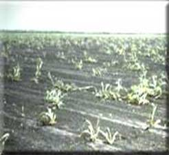
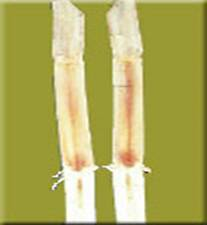

SUGARCANE :: MAJOR DISEASE :: SETT ROT OR PINEAPPLE DISEASE
Sett rot or Pineapple disease - Ceratocystis paradoxa
Symptoms
The disease primarily affects the setts usually two to three weeks after planning. The fungus is soil-borne and enters through cut ends and proliferates rapidly in the parenchymatous tissues. The affected tissues first develop a reddish colour which turns to brownish black in the later stages. The severely affected setts show internodal cavities covered with the mycelium and abundant spores. A characteristic pineapple smell is associated with the rotting tissues. The setts may decay before the buds germinate or the shoots may die after reaching a height of about 6-12 inches. Infected shoots are stunted.
{kind=link}
|  |  |
Symptoms |
|
Pathogen: The fungus produces both macroconidia and microconidia. Conidiophores are linear, thin walled with short cells at the base and a long terminal cell. The microconidia are hyaline when young but become almost black at maturity. They are thinwalled, cylindrical and produced endogenously in chains in the long cells of conidiophores and pushed out in succession. Macroconidia are produced singly or in chains on a short, lateral conidiophores. Macroconidia are spherical or elliptical or truncate or pyriform and are hyaline to olive green or black measuring 16-19x10-12 um.
Setrot Video
The fungus also produces chlamydospores on short lateral hyphae in chains, which are oval, thick walled and brown in colour. The perithecia are flask shaped with a very long neck. The bulbous base of the perithecium is hyaline or pale yellow, 200-300µm in diameter and ornamented with irregularly shaped, knobbed appendages. The ostiole is covered by numerous pale-brown, erect tapering hyphae. Asci are clavate and measures 25x10µm and ascospores are single celled, hyaline, ellipsoid, more convex on one side, measures 7-10 x 2.5-4µm.
Favourable Conditions
- Poorly drained fields.
- Heavy clay soils
- Temperature of 25-30o C
- Prolonged rainfall after planting.
Disease Cycle
The fungus survives as conidia and chlamydospores in the soil and in the infected, burried cane tissues. The inoculum moves from field to field through wind-borne conidia or irrigation or rain water. Inside the sett it spreads rapidly through the parenchymatous tissues and causes sett rot.
The insects like cane borer (Diatraea dyari) also helps in the spread of the disease. The pathogen also survives on coconut, cocoa, mango, papaya, coffee, maize and arecanut. Insects also play a part in the dissemination of the pathogen.
Management
Set Treatment Video
- Soak the setts in 0.05% Carbendazim 15 minutes.
- Use long setts having 3 or 4 buds.
- Provide adequate drainage during rainy seasons.